I was never the biggest fan of cheese cake, until my sister made me a Basque burnt cheese cake and I became obsessed. It’s a very easy and therapeutic process. Basically, you just have to mix everything together and put it in the oven. Taro is one of my favorite food in Taiwan, and I wanted to try making a cheesecake with a tint of home. This is where my taro cheesecake was born! I have also tried different flavors from the east, including red bean paste, and Matcha, for a touch of Japan.
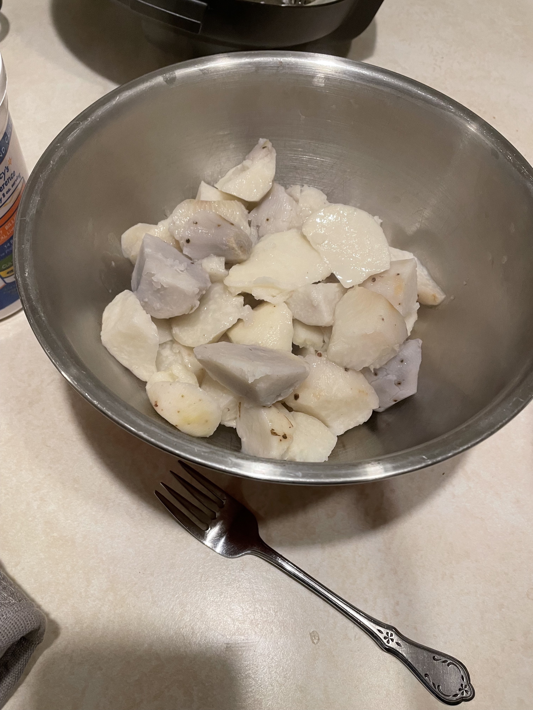 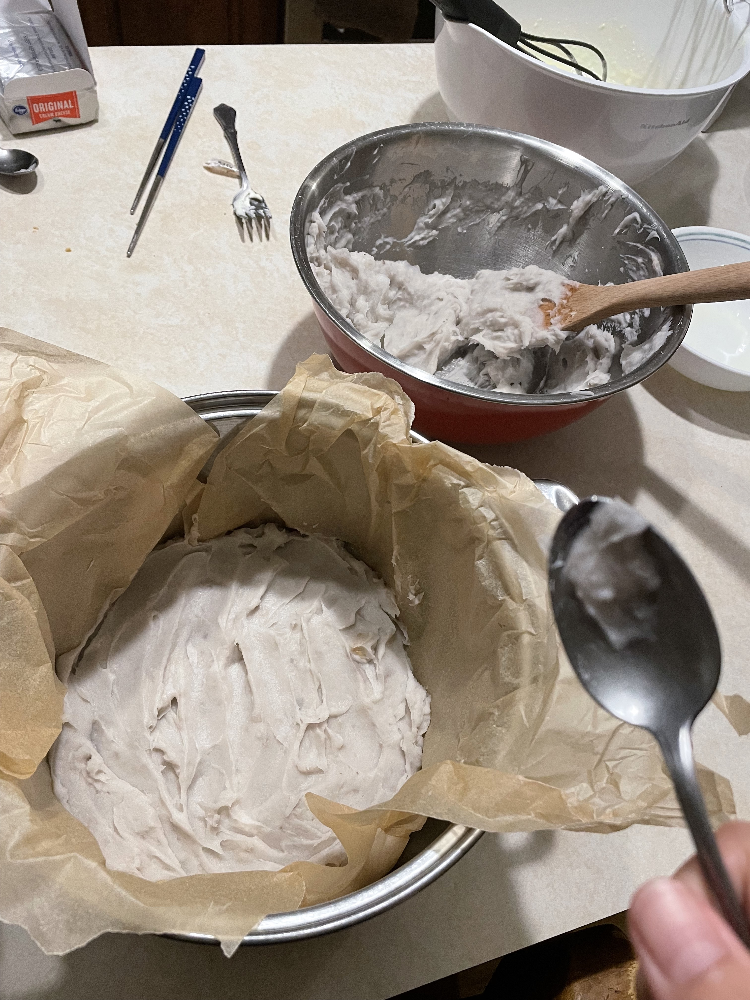 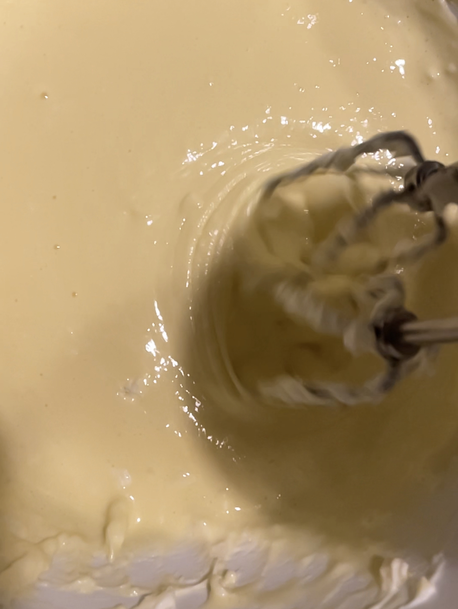 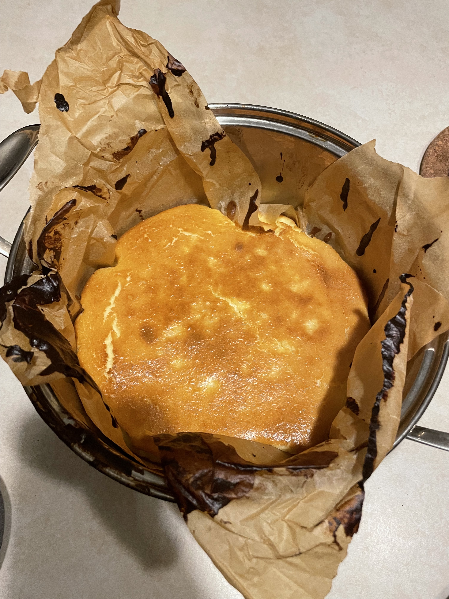 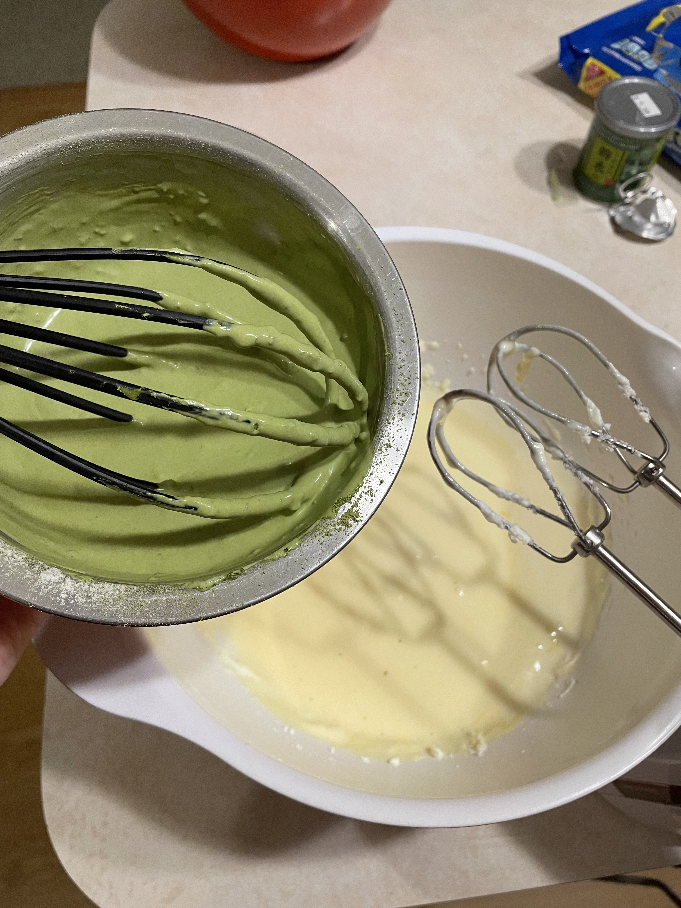
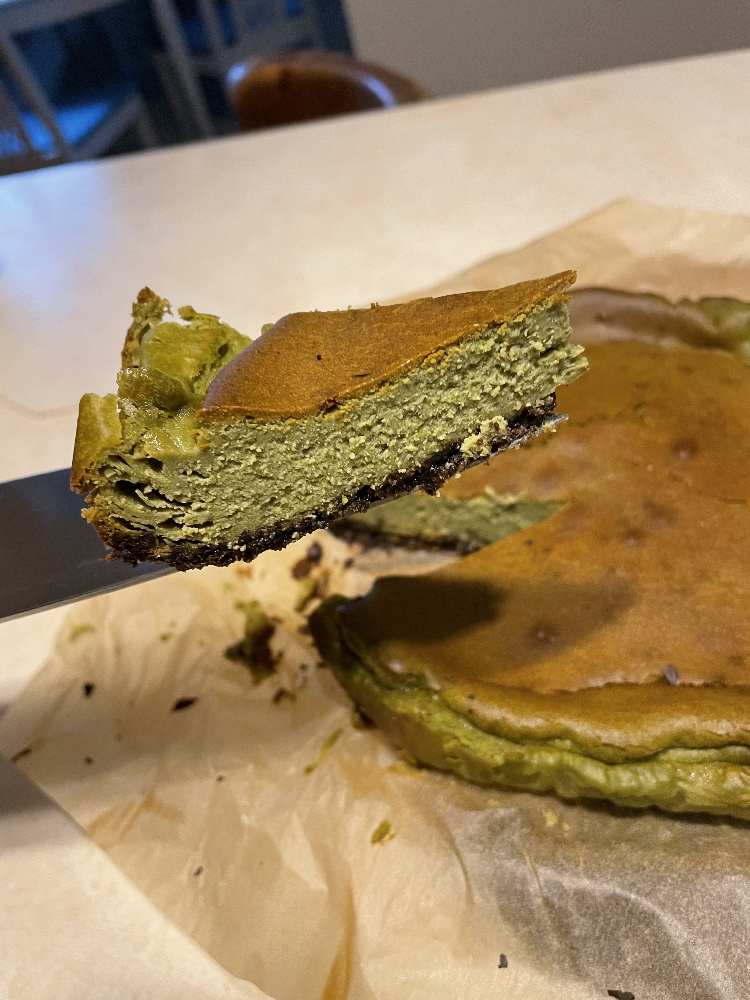
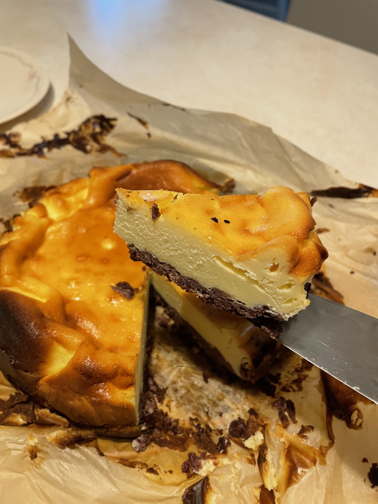
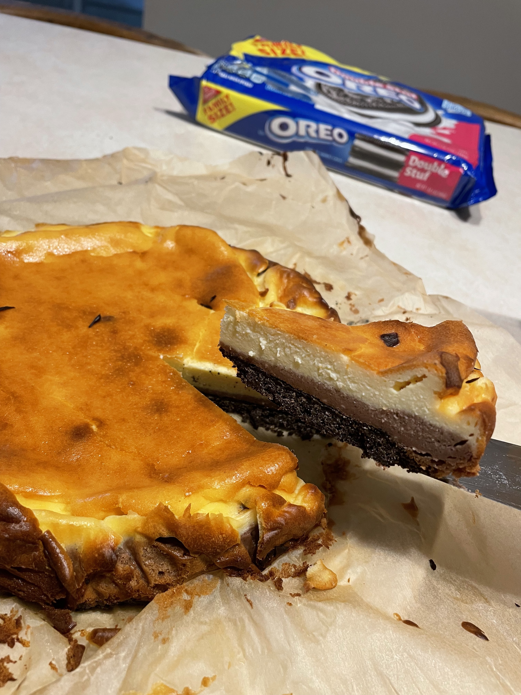
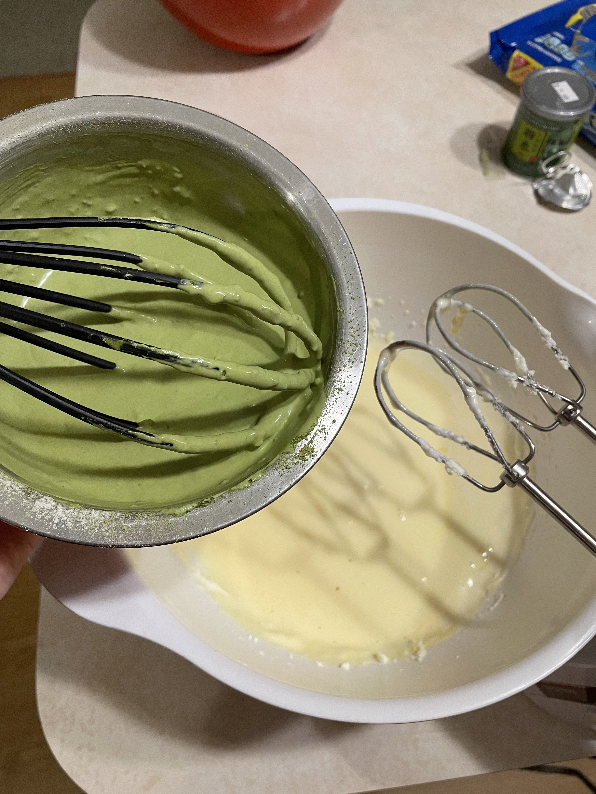
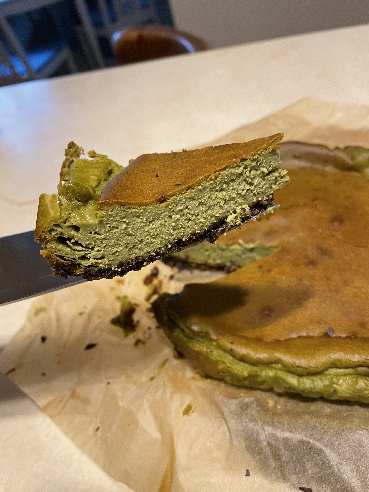
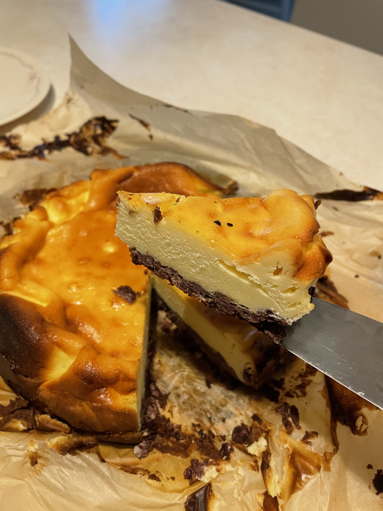
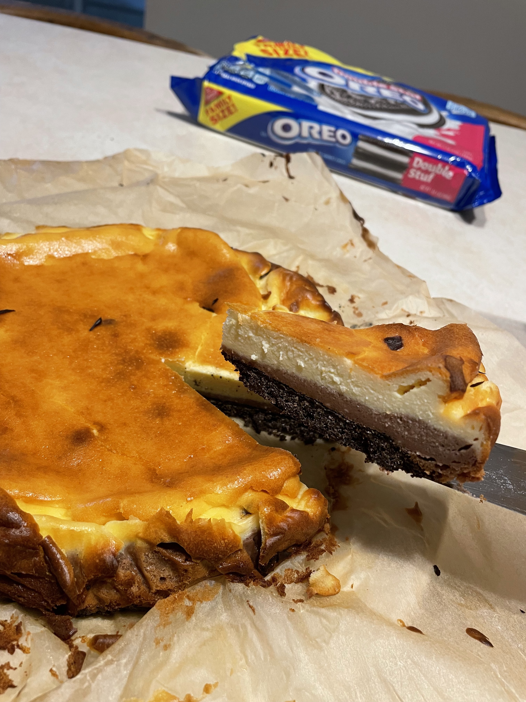
Ingredients Taro puree Dajia Taro 300g sugar 45g 15g unsalted butter 10g fresh cream cheese paste Cream cheese (room temperature) 250g Sugar 60g 2 eggs (room temperature) 150g fresh cream